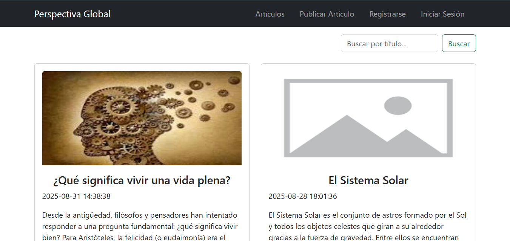

Walter Medina
Programador Web
Desarrollador web en PHP y Laravel, con experiencia en MySQL y en frontend con HTML, y Bootstrap.
-

-

- waltermedina1357@gmail.com
Experiencia Laboral
-
Comercio Ozuna Ana María.
- Desarrolle un Sitema de Ventas y Almacén para resolver los principales problemas del kiosco, como el desorden en el control de stock, el registro manual de ventas y la falta de información clara sobre los productos disponibles.
- Permitió agilizar el proceso de venta, reduciendo el tiempo de atención al cliente y minimizando errores al momento de cobrar y registrar las ventas.
- Mejoró significativamente el control del inventario, evitando quiebres de stock y facilitando la reposición de productos mediante información actualizada en tiempo real.
- Centralizó la gestión de productos, proveedores y ventas en un solo sistema, eliminando planillas y registros manuales que generaban confusión y pérdidas de información.
- Incorporó distintos niveles de acceso para los usuarios, asegurando un uso ordenado y seguro del sistema dentro del kiosco.
- Como resultado, el kiosco logró una gestión más rápida, organizada y confiable, reduciendo la carga administrativa diaria y mejorando la toma de decisiones.
Mis Proyectos
-

Perspectivaglobal
Es una plataforma web que permite a los usuarios registrarse, iniciar sesión y crear publicaciones en formato de artículos. Incluye un editor de texto enriquecido para dar formato al contenido, opciones para añadir imágenes, categorías o etiquetas, y un sistema para que otros usuarios puedan leer y cometar las publicaciones.
Repositorio Ir Al Sitio